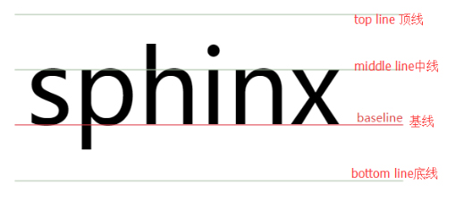

根据css显示分类，XHTML元素被分为
三种类型:块状元素，内联元素/行内元素，行内块元素
1.块状元素（block element）
A）块状元素在网页中就是以块的形式显示，所谓块状就是元素显示为矩形区域，常用的块状元素包块div,dl,dt,dd,ol,ul,li,(h1-h6),p,form,hr,table,tr,td等；B）默认情况下，块状元素都会独占一行，通俗地说，两个相邻块状元素不会出现并列显示的现象；默认情况下，块状元素会按顺序自上而下排列。
C）块状元素都可以定义自己的宽度和高度。
D）块状元素一般都作为其他元素的容器，它可以容纳其它内联元素和其它块状元素。我们可以把这种容器比喻为一个盒子
注:p标签是一个块元素，但它只能作为内联元素（inline element）的容器；
标题标签之间不能互相嵌套
2.内联元素（inline element）（或是行内元素）
A) 常见的内联元素如：a,span,i,em,strong,b,br,u,del,s,sub,sup等
B) 内联元素的表现形式是始终以行内逐个进行显示；
C) 内联元素没有自己的形状，不能定义它的宽和高,它显示的宽度、高度只能根据所包含内容的高度和宽度来确定，它的最小内容单元也会呈现矩形形状；
D)内联元素也会遵循盒模型基本规则，如可以定义padding,border,margin等属性，padding,border,margin上下的值没有实际布局功能;
3.行内块元素（inline-block element）
A) 常见的行内块元素如：img，input，select，textarea等
B) 行内块元素的表现形式是始终以行一行显示，并且能够设置宽度高度
元素可通过display属性来改变元素的显示类型
1）display属性与属性值
说明：各属性值的作用属性值：block/inline/inline-block（img,input,textarea,select）/none/list-item(li)/table-row(tr)/table(table)/table-cell(td)/table-header-group(thead)/table-footer-group(tfoot)/table-row-group(tbody),flex,inline-flex;
display常用的取值 1)block块状显示：类似在元素后面添加换行符，也就是说其他元素不能在其后面并列显示。或者就是让元素竖排显示。
2)inline内联显示：在元素后面删除换行符，多个元素可以在一行内并列显示。或者就是让元素横排显示。
3)inline-block行内块状显示：元素的内容以块状显示，行内的其他元素显示在同一行。
（此元素类型支持vertical-align属性）img,input,select,textarea
4)none：隐藏元素。
5)flex：弹性盒子。
6)grid：网格布局。
display不常用的取值 7)list-item:列表项，将元素转换成列表。li的默认类型。
8)table：以表格形式显示 table表格的默认类型。
9)table-row：以表格行形式显示 tr表格的行的默认类型。
10)table-cell：以表格列形式显示 td表格的列默认类型。
11）当元素设置了float属性后，就相当于该元素加了display:block；
Inline-block行内块元素显示：元素的内容以块状显示，行内的其他元素显示在同一行。
（此元素类型可以支持vertical-align属性）img,input
vertical-align:控制一行内的内联元素的垂直对齐方式,也可以支持table-cell元素直接设置vertical-align的属性，table-cell的元素不支持margin属性
垂直对齐方式{vertical-align:baseline(基线对齐，默认值)vertical-align:top(元素的顶端与行中最高的元素顶端对齐)/bottom元素的底端与行中最低的元素底端对齐/middle/sub(与父元素的下标字体基线对齐)/super（与父元素的上标字体基线对齐）/text-top(与父元素的字体顶端对齐)/text-bottom(与父元素的字体底端对齐);}

拓展：
置换元素/替换元素 概念：一个内容不受CSS视觉格式化模型控制，CSS渲染模型并不考虑对此内容的渲染，且元素本身一般拥有固有尺寸（宽度，高度，宽高比）的元素，这些元素往往没有实际的内容，即是一个空元素,置换元素就是浏览器根据元素的属性和属性值，来决定元素的具体显示内容。大部分的置换元素的元素类型为inline-block;被称之为置换元素。HTML中的img、input都是置换元素。 例如浏览器会根据img标签的src属性的值来读取图片信息并显示出来。 又例如根据input标签的type属性来决定是显示输入框，还是单选按钮等。 非置换元素/不可置换元素 ：HTML中除了可替换元素外，其它都是不可替换元素（即其内容直接表现给用户端例如浏览器） textarea select object